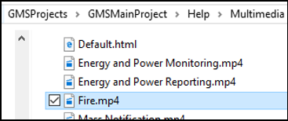
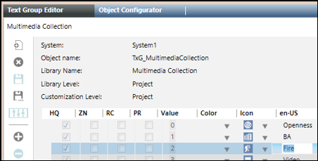
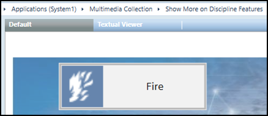

Prepare Media Files for a Multimedia Collection
- Do one of the following:
- Obtain multimedia files (MP3 for audio files, MP4 for videos, and HTML pages with videos) from Headquarters.
- Create your own media files as required.
Naming Media Files
When creating media files, give them short meaningful names, because the same name must be set in the library text group, which defines the label associated with that file in Desigo CC.

Specifically, for each text group entry associated with a media file, the text you enter in the language column en-US, is the text that will display on the button for playing that media file in Desigo CC.

Therefore, if required, modify the original name of the media file to be descriptive and short enough to fit into the media file buttons.
